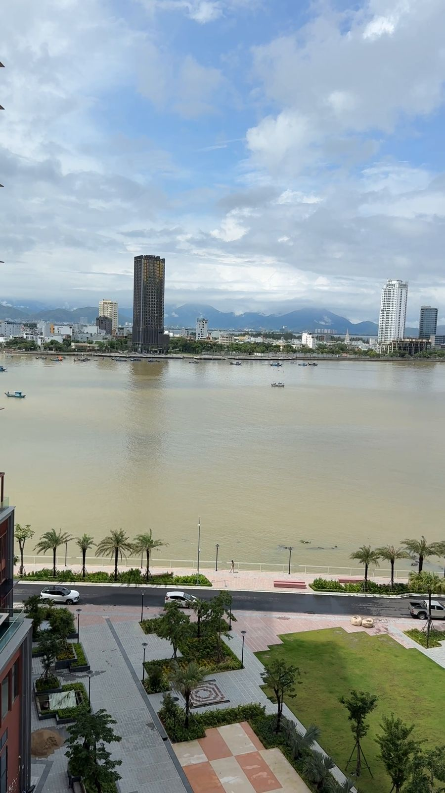
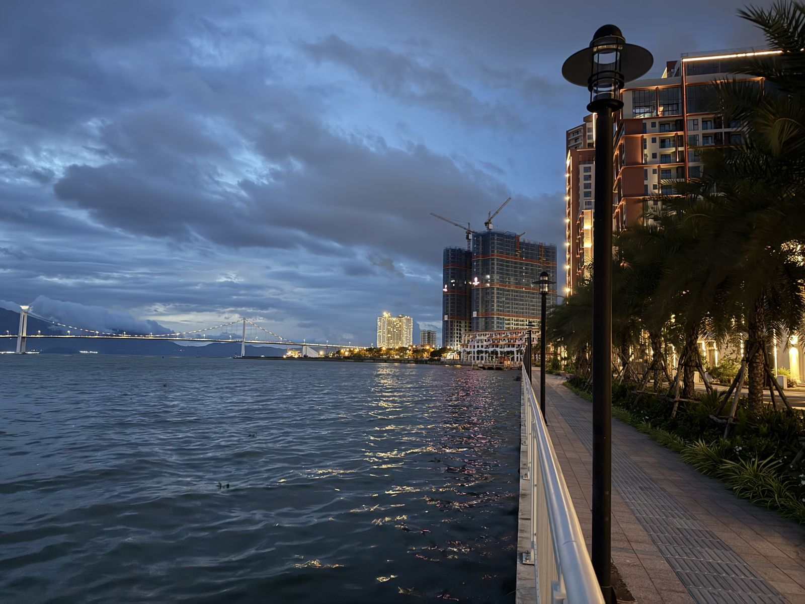
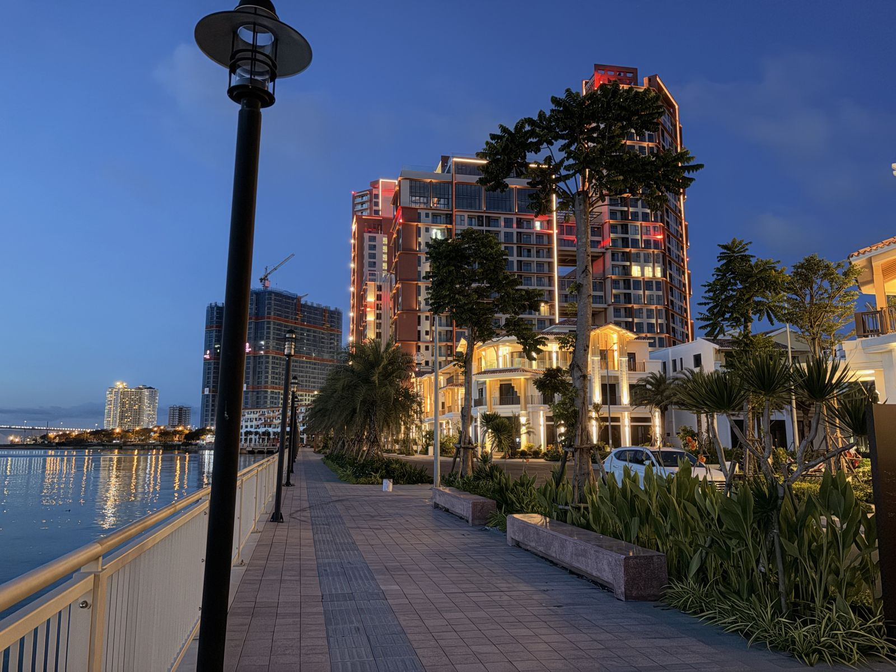
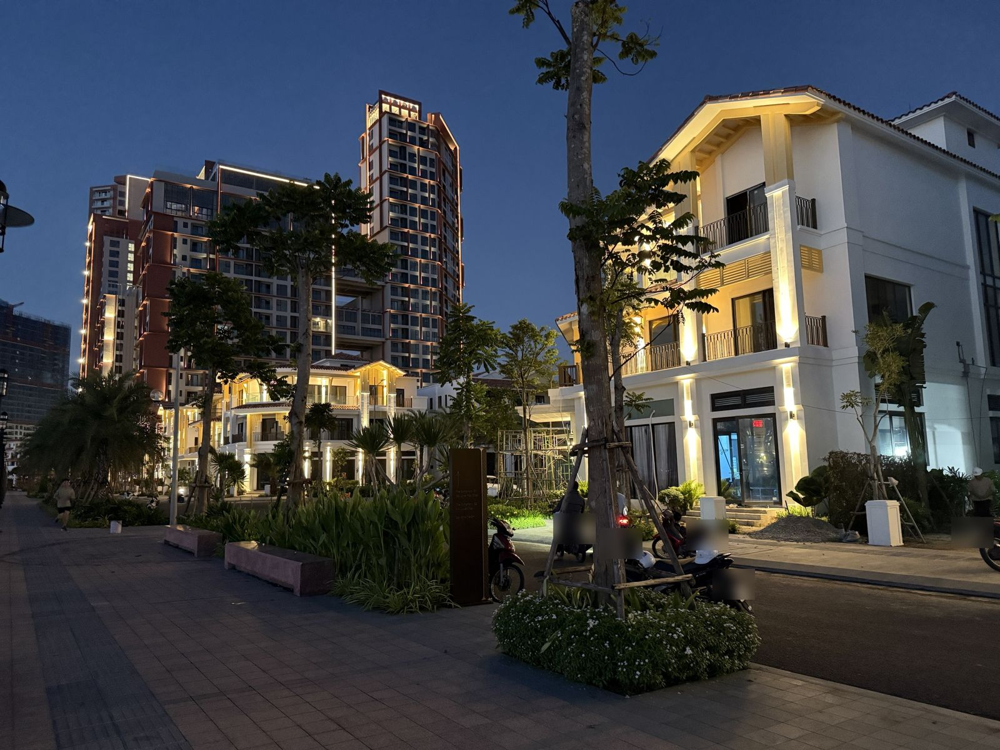
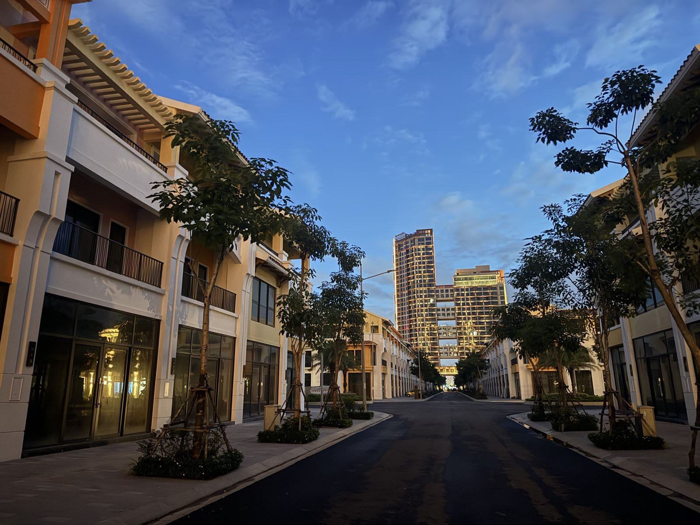

Sun Symphony Residence ở đâu?
Sun Symphony Residence là quần thể do Sun Group phát triển, nằm sát mép sông Hàn, trên trục Trần Hưng Đạo – Lê Văn Duyệt thuộc khu vực Sơn Trà, nhìn sang bờ Hải Châu. Dự án rộng khoảng 8 ha, ra mắt năm 2024, gồm hai phân khu: cao tầng The Symphony và thấp tầng The Sonata (townhouse, shophouse, villa).
Các tòa S1, S2, S3 đã bắt đầu bàn giao cho cư dân từ tháng 5/2026. Đây cũng là lúc nhiều chủ nhà tìm đơn vị hoàn thiện, và là lý do phần lớn công trình của Nhật Khang hiện nay nằm trong khu này.
Tầm view – điều làm nên giá trị Symphony
- Phía nam – cầu Rồng, cầu sông Hàn: Từ đường dạo ven sông có thể nhìn thẳng về hai cây cầu biểu tượng và dải nhà cao tầng bờ Hải Châu. Khi lên đèn, ánh sáng phản chiếu kín mặt sông.
- Phía bắc – cầu Thuận Phước, cửa biển: Đi dọc bờ sông về phía cửa biển là cầu treo Thuận Phước và dãy núi xa; buổi chiều mặt trời lặn phía sau dãy núi bên kia sông.
- Từ trên tòa tháp: Căn hộ tầng cao nhìn xuống công viên nội khu và toàn cảnh sông Hàn. Đây là kiểu view nên được tận dụng ngay từ lúc bố trí nội thất.
- Mùa pháo hoa: Vị trí ven sông giúp cư dân xem Lễ hội Pháo hoa Quốc tế Đà Nẵng ngay từ ban công hoặc đường dạo ven sông.
Nội khu: phố đi bộ ven sông và dãy phố The Sonata
Dọc bờ sông là đường dạo lát đá, lan can kính – thép và hàng đèn cột kiểu cổ điển, chạy liền với công viên cây xanh. Phía sau là các dãy townhouse, shophouse The Sonata với mái ngói, ban công sắt và đèn hắt vàng ấm vào buổi tối.
Theo thông tin chủ đầu tư công bố, nội khu còn có bể bơi vô cực hướng sông, công viên trung tâm khoảng 5.000 m², bến thủy, phòng gym, kids club và spa. Trên khối đế các tòa tháp có hồ bơi riêng cho cư dân.
Hoàn thiện căn hộ ở Sun Symphony: kinh nghiệm thực tế
Làm việc với ban quản lý trước: đăng ký thi công, đăng ký giờ dùng thang hàng, giờ được phép làm việc gây ồn và lối vận chuyển. Xà bần phải đóng bao, chuyển xuống hầm và đổ đúng nơi quy định của tòa nhà.
Tận dụng view ngay từ bố trí: sofa và bàn làm việc hướng ra sông, hạn chế tủ cao chắn cửa kính, rèm hai lớp để giảm nắng chiều mà vẫn giữ tầm nhìn. Ánh sáng nội thất nên dùng tông ấm 3000K và đèn hắt, để buổi tối kính không bị lóa khi ngắm cảnh sông.
Căn bàn giao thô cần làm đủ các lớp kỹ thuật trước: chống thấm và ngâm nước thử khu WC, cán nền tạo dốc, thử áp ống cấp nước, kiểm tra điện trước khi đóng trần. Đây là những phần sẽ bị che lấp sau hoàn thiện.
Các căn hộ Nhật Khang đang làm tại Sun Symphony
- 3PN · 100 m² – Hoàn thiện nội thất trọn gói căn 3PN 100 m² Sun Symphony
- 3PN · 100 m² – Hoàn thiện căn hộ 3PN phong cách Địa Trung Hải tại Đà Nẵng
- Studio · 46 m² – Thiết kế thi công căn studio 46 m² giường tầng Sun Symphony
- 2PN · 74 m² – Lát sàn gạch giả gỗ xương cá căn hộ 74 m² tại Đà Nẵng
- Cải tạo · 70 m² – Cải tạo căn hộ 2PN: dời WC, vách gạch kính, trần giật cấp
- Shophouse · 3 tầng – Cải tạo shophouse 3 tầng thành studio cho thuê – Sun Symphony
Hình ảnh thực tế





Câu hỏi thường gặp
Sun Symphony Residence nằm ở đâu?
Dự án nằm bên bờ sông Hàn, trên trục Trần Hưng Đạo – Lê Văn Duyệt, khu vực Sơn Trà, Đà Nẵng, nhìn sang bờ Hải Châu; từ đây có view về cầu Rồng, cầu sông Hàn và cầu Thuận Phước.
Căn hộ Sun Symphony có những loại diện tích nào?
Theo thông tin công bố, căn 2 phòng ngủ từ khoảng 68,8 m², 2 phòng ngủ + 1 từ khoảng 79,2 m², 3 phòng ngủ từ khoảng 93,1 m², ngoài ra có studio, duplex và shophouse khối đế.
Hoàn thiện căn hộ bàn giao thô ở Sun Symphony hết bao nhiêu?
Theo báo giá thực tế 2026 của Nhật Khang: hoàn thiện cơ bản khoảng 4–5 triệu/m², hoàn thiện kèm thiết bị 5,5–6,5 triệu/m², trọn gói nội thất 12–14 triệu/m² thông thủy (chưa VAT). Báo giá chính xác cần khảo sát căn và bản vẽ.